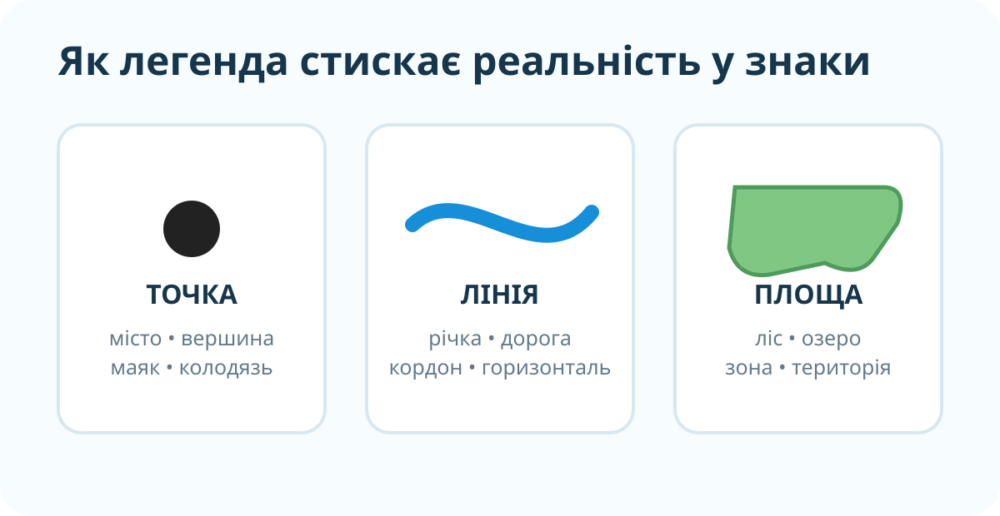

Фізична основа світу
Таке зображення дає загальне просторове уявлення про материки, океани, рельєф і великі природні об’єкти.
NASA Earth Observatory / Blue Marble, глобальна фізична основа.
Сьогодні карта — не ілюстрація, а система доказів. Ви навчитеся визначати тип карти за її змістом, читати легенду й доводити висновок конкретними картографічними ознаками.
Уявіть дві карти. На першій одночасно видно річки, міста, кордони, рельєф і дороги. На другій майже весь зміст підпорядкований одному явищу — наприклад, густоті населення.

Локальна схема: три базові способи передавання просторових об’єктів у легенді.
Таке зображення дає загальне просторове уявлення про материки, океани, рельєф і великі природні об’єкти.
NASA Earth Observatory / Blue Marble, глобальна фізична основа.

Кольори тут кодують значення одного показника. Без легенди неможливо коректно сказати, що саме означає темніший або світліший тон.
Тематична карта густоти населення світу, Wikimedia Commons.
Карта стискає реальність у систему знаків. Щоб її читати, треба розшифрувати три типи об’єктів.
Оберіть, що найімовірніше позначає кожен символ:
Є умовна шкала показника: 0–20, 21–50, 51–100, понад 100. Територія А має 18 одиниць, Б — 76, В — 143.
OpenStreetMap. Тут одночасно подано дороги, населені пункти, води, межі, об’єкти інфраструктури — типовий комплексний зміст.
Під час перегляду випишіть 3 функції легенди карти.
Назва карти формулює, що саме показано. Легенда пояснює символи, кольори, лінії, штрихування й шкали. Масштаб визначає рівень деталізації. Разом ці елементи дозволяють не просто «дивитися» на карту, а читати її як модель даних.
Проблема: чи можна визначити тип карти лише за кількістю кольорів?
§12. Відкрийте електронний підручник і знайдіть у параграфі одну загальногеографічну та одну тематичну карту. Для кожної випишіть назву й 3 елементи легенди.
Запотоцький С.П. та ін. Географія, 6 клас, 2023.